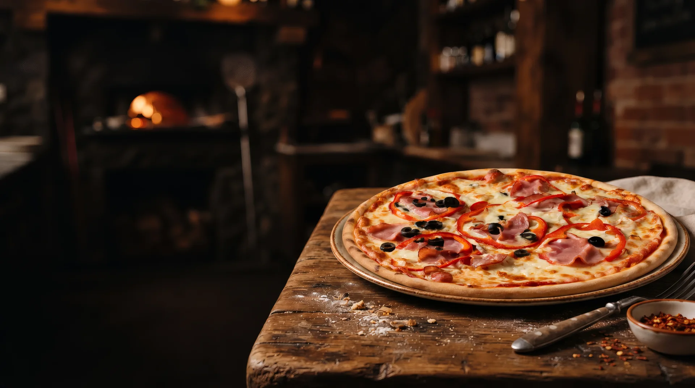

Margherita
32 lei
Sos de roșii, mozzarella fior di latte, busuioc proaspăt
400 g · Clasică, așa cum trebuie.

Făină. Apă. Foc. Și un pic de suflet.
Pizza coaptă pe vatră, cu lemn de fag.
Aluat răbdător, ingrediente bune și încă un motiv să strângi oamenii în jurul mesei.
La noi sau la tine?
Rezervă o masă pentru ai tăi sau ia bucuria la pachet.